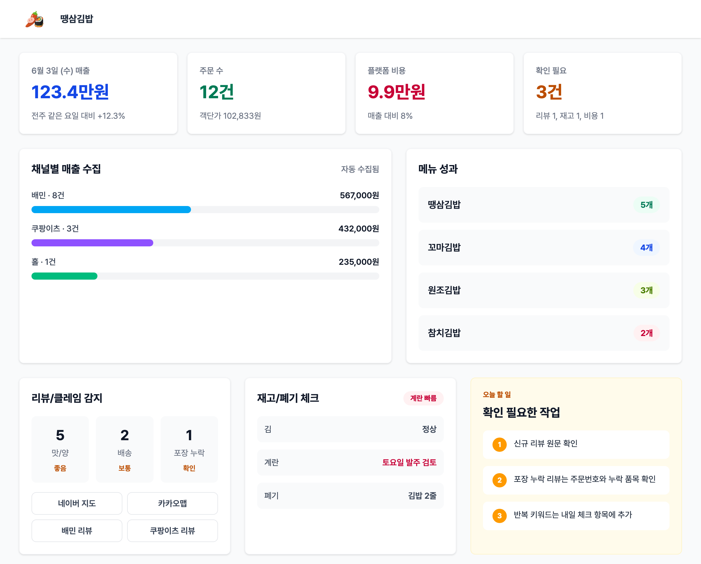
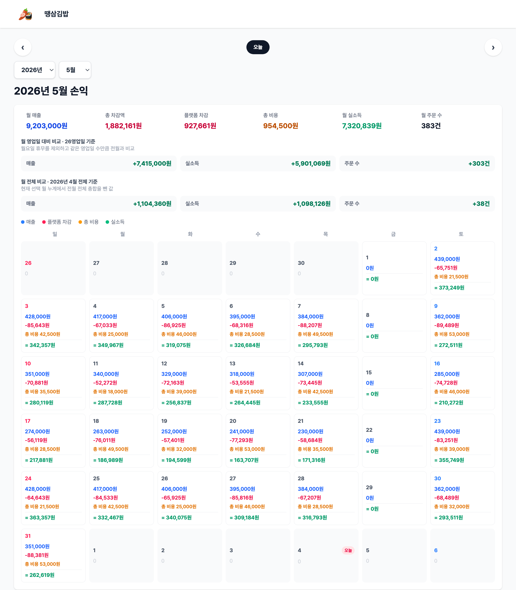
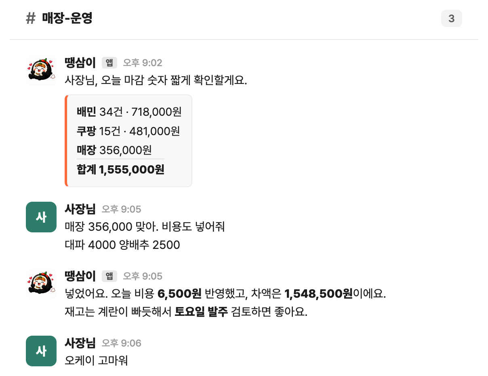

소상공인 / 외식업
땡삼김밥
땡삼김밥
매장 관리를 자연어로?
배민/쿠팡/매장 매출과 비용, 리뷰가 따로 놀던 김밥집.
리뷰부터 정산까지 한 곳에서 보는 관리자 페이지를 직접 개발하고,
이제 채팅 하나로 운영합니다.
상황흩어진 배달/매장 매출과 그날 비용, 리뷰를 매일 사장님이 손으로 챙김
제작리뷰/매출/비용/정산을 한 곳에서 관리하는 자체 관리자 페이지 개발
운영사장님은 슬랙으로 한마디, 집계/마감 정산은 자동으로 실행
데이터2025년 6월 오픈일부터 현재까지 전 기간 통합
한 페이지
리뷰/매출/비용/정산 통합
수기 → 한마디
하루 마감 정산
"마감 숫자 짧게 확인할게요. 배민 34건/718,000원, 쿠팡 15건/481,000원, 매장 356,000원, 합계 1,555,000원. 비용까지 반영해서 차액도 정리해뒀어요."


